Mechanics is the oldest branch of physical science which deals with the state of rest or motion of bodies under the action of forces.
Branches of mechanics:
Conditions for equilibrium:
Graphical condition: Under this condition, the forces or vectors are transformed into a force polygon. For equilibrium, the force polygon, must close.
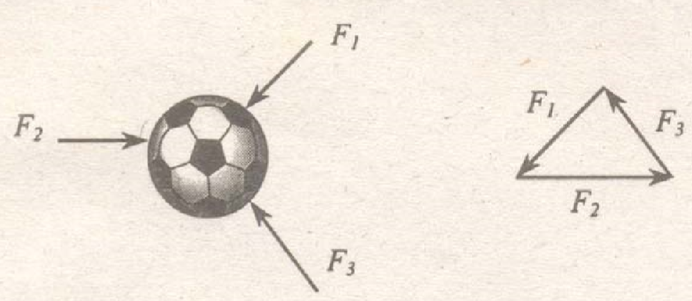
Directional condition: If three or more non-parallel forces or vectors are in equilibrium, then they must be concurrent.
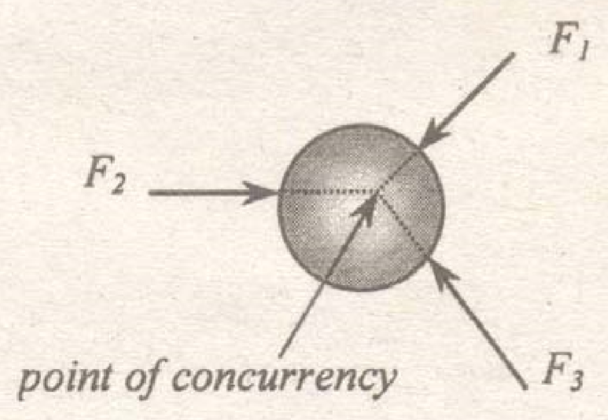
Analytical condition: If forces or vectors are in equilibrium, then it must satisfy the three static equations; namely
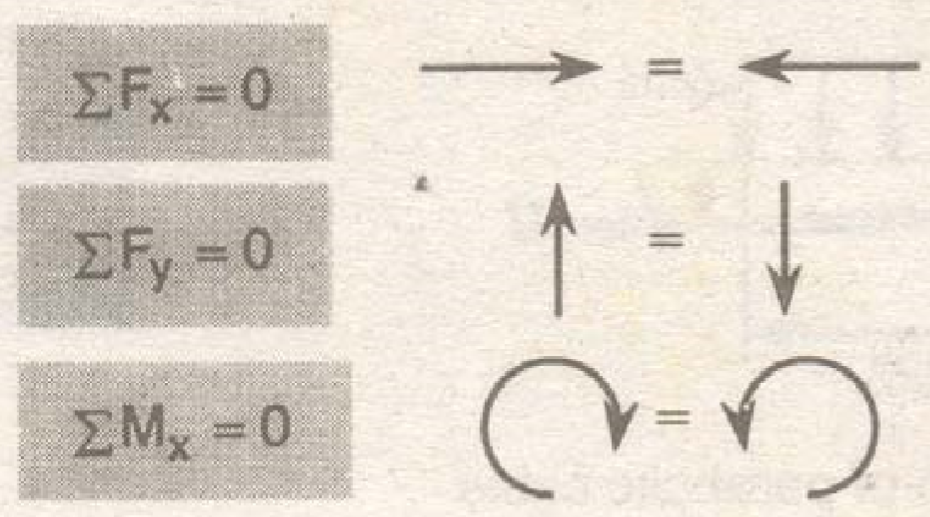
Friction is defined as the limited amount of resistance to sliding between the surfaces of two bodies in contact.
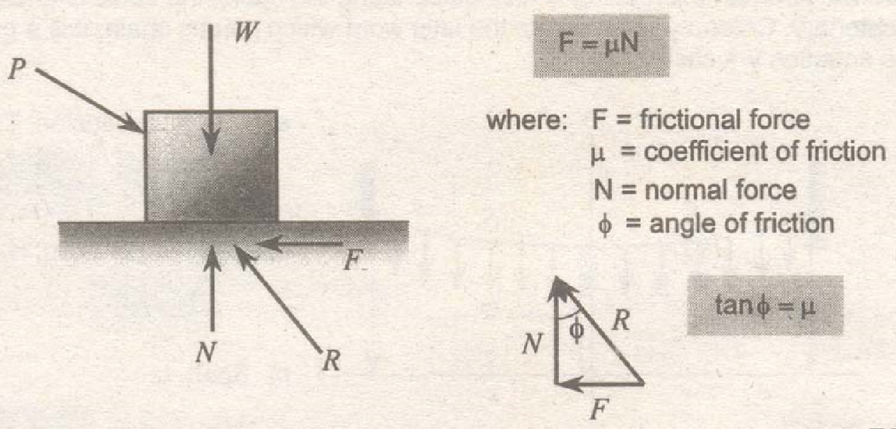
Parabolic cable: When the loading is uniformly distributed horizontally, the cable is analyzed as a parabolic cable.
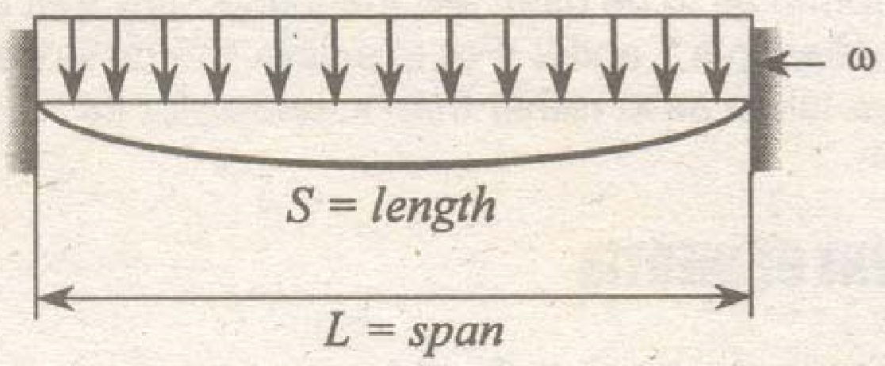
Tension at the lowest point, H:
$$H=\frac{\omega L^{2}}{8d}$$
Tension at the support, T:
$$T=\sqrt{H^{2}+\left ( \frac{\omega L}{2} \right )^{2}}$$
Length of parabolic cable, S:
$$S=L+\frac{8d^{2}}{3L}-\frac{32d^{4}}{5L^{3}}$$
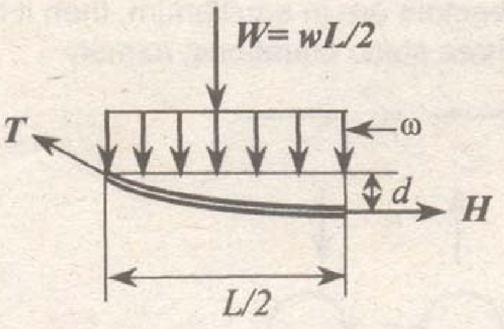
where:
S = length of parabolic cable
d = sag
L = span or distance between supports
Ω = unit weight or load per unit length
T = maximum tension (usually at the support)
H = minimum tension (usually at the lowest point of the cable)
Catenary: When the loading is distributed along the cable, the cable is analyzed as a catenary. Catenary comes from the latin word which means chain. It is a graph of the equation $y = \cosh x$.
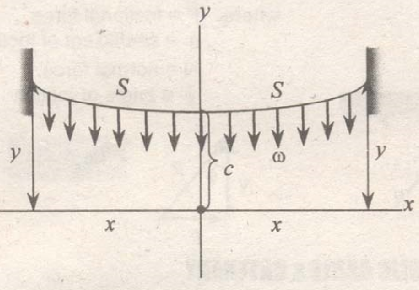
Maximum tension, T:
$$T=\omega y \ \ \ \ \ \ \ y^{2}=S^{2}+c^{2}$$
Minimum tension, H:
$$H=\omega c$$
Span, L:
$$L=2x \ \ \ \ \ \ \ x=c\ln{\frac{S+y}{c}}$$
Length
$$\text{length}=2S$$
If the cable has uneven supports, the formulas to be used are the same, only that all unequal dimensions will now contain subscripts 1 and 2. For example, the distance from the origin to the left support is now taken as x1 rather than x, and x2 for its distance to the right support, and so on.
Another term for moment of inertia is second moment of area.
1. Centroidal moment of inertia (with respect to an axis passing through the centroid):
Rectangle
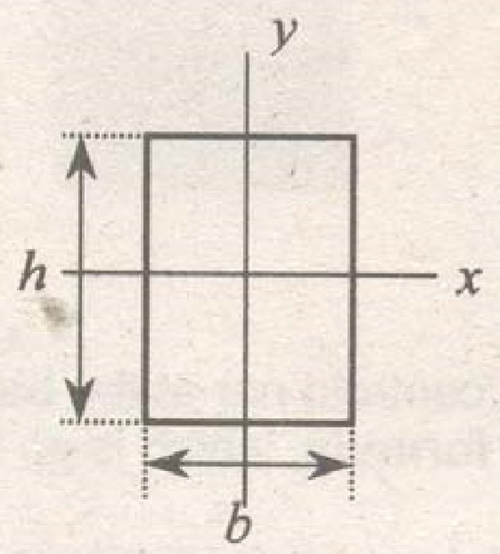
$$I_{x}=\frac{bh^{3}}{12}$$
$$I_{y}=\frac{b^{3}h}{12}$$
Triangle
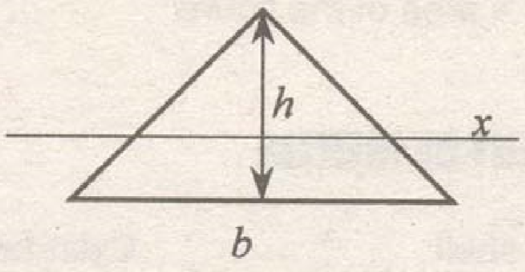
$$I_{x}=\frac{bh^{3}}{36}$$
Circle
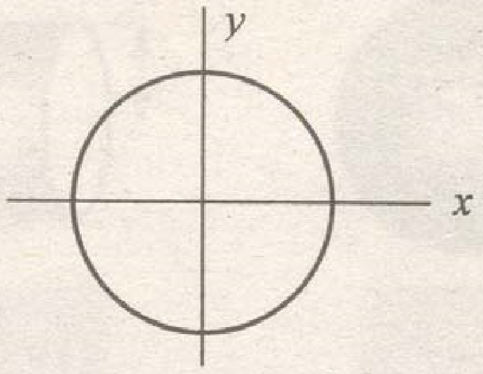
$$I_{x}=I_{y}$$
$$I_{x}=\frac{\pi r^{4}}{4}=\frac{\pi D^{4}}{64}$$
Ellipse
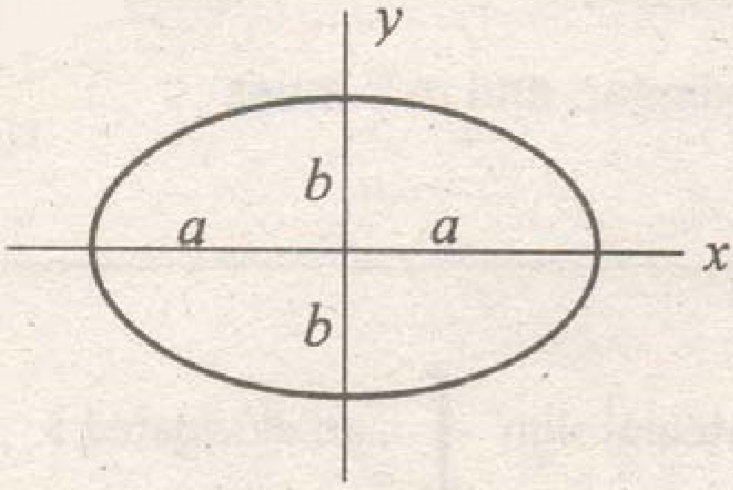
$$I_{x}=\frac{\pi ab^{3}}{4}$$
$$I_{y}=\frac{\pi a^{3}b}{4}$$
2. Moment of inertia with respect to an axis passing through the base:
Rectangle
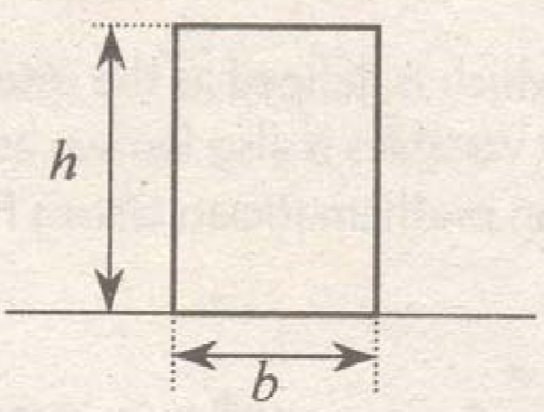
$$I_{b}=\frac{bh^{3}}{3}$$
Triangle
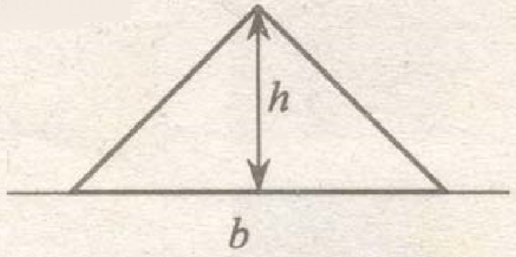
$$I_{b}=\frac{bh^{3}}{12}$$
For composite figures and for axis not at the centroid nor at the base, moment of inertia may be calculated using the transfer formula, which is as follows;
$$I=I_{g}+Ad^{2}$$
where:
d = distance from the centroid to the axis
A = area of the figure
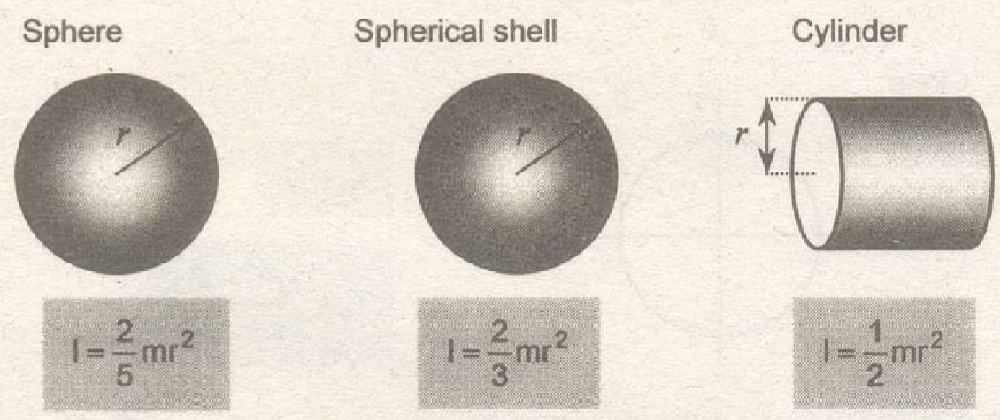
where: r = radius of sphere/cylinder, and m = mass